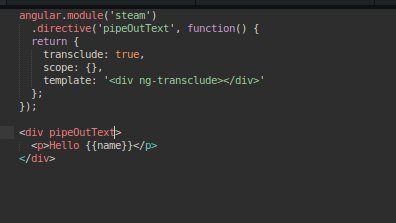

By Akhil Pandey, June 13, 2016
By Akhil Pandey, June 13, 2016
To be honest in Angular directives are nothing but DOM elements simply put on steroids. Now if you add transclusion to it literally the possibilty of having With that said before diving into what directives are and how cool are they, let us basically understand what makes directives in angular so powerful.
Some of the well known directives which are used regularly are :
ng-srcng-showng-hideng-modelng-repeat
We often tend to waste a lot of time and energy in writing code which is already/previously written and
components which are already built. But what if you could write them only once and reuse them as
many times as possible ?
ANS : "Directives"
You can create truly reusable components with directives, and the approach to build
custom components is definitely neater and more intuitive.
Where do Custom Directives get implemented ?
elementsattributesclasses
After we initialize a directive we can observe that it gets a parent scope by default. In
the best interests of the application you write you won't really want that to happen. So
in order to freely modify the properties of the directive we expose the parent's controller
scope to the directives.In some cases your directive may want to add several properties and
functions to the scope that are for internal use only.
Example : If you have a directive that deals with comments(just like my sTeam web interface),
you may want to set some internal variable to show or hide some of its specific sections. If we set
these models to the parent's scope we would pollute it.
Without polluting, is there any option ?
Absolutely there are two options,
- Use a
childscope - Use an
isolatedscope
Transclusion is a feature that enables us to wrap a directive around arbitrary content. We can extract and compile it against the correct scope later, and eventually place it at the specified position in the directive template. If you set transclude:true in the directive definition, a new transcluded scope will be created which prototypically inherits from the parent scope. If you want your directive with isolated scope to contain an arbitrary piece of content and execute it against the parent scope, tran- sclusion can be used.
Example :

See the above snippet, here ng-transclude says where to put the transcluded content. In this case the DOM content Hello {{name}} is extracted and put inside div ng-tran- sclude /div> . The important point to remember is that the expression {{name}} interpolates against the property defined in the parent scope rather than the isolated scope.
Thats it folks,
Happy Hacking !!